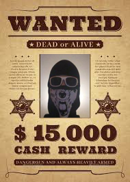

Тарас Наконечний народився в средній сім'ї. Ще з ранього дитинства Тарасик був забіякою. Він бив повітря, уявляючи людей, яким він заздрить. Після проведення психологічних тестів було доказано, що в Тарасика - шизофренія. Після дворічного лікування, Тарасик пішов в школу, там він ні з ким не ладив і в нього не було друзів. Вже у віці 10 років юного Тарасика розшукувала поліція.
